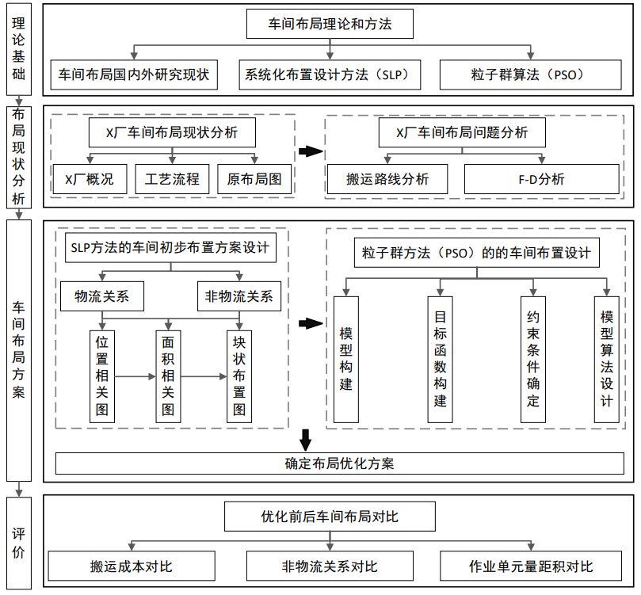
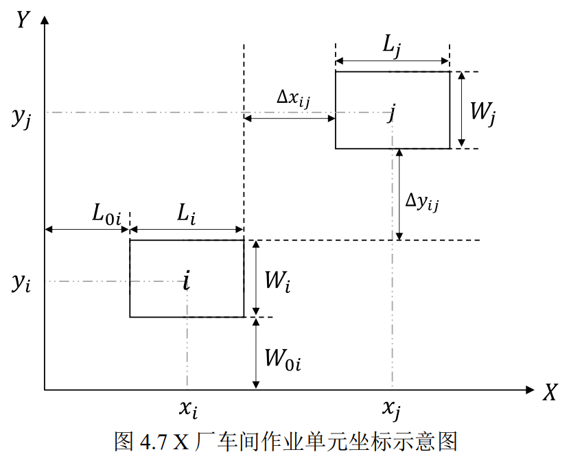
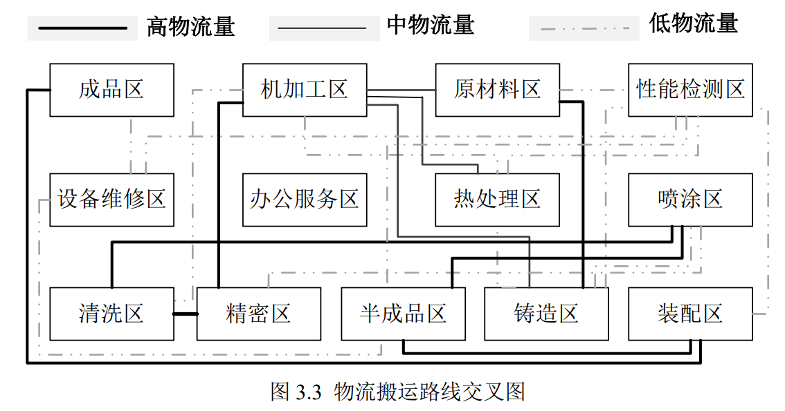
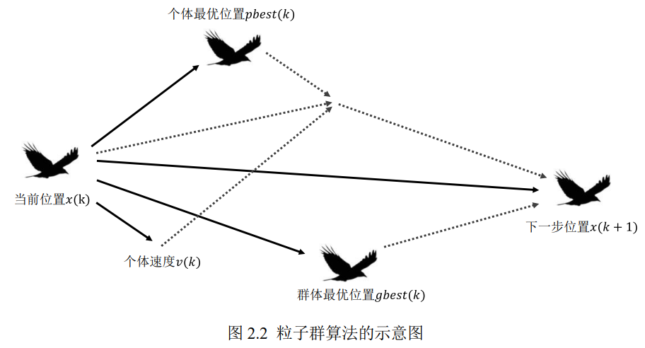

抽象示意图绘制
车间布局和算法示意图
这四张图是我写本科论文时画的。我用坐标标出车间里的作业区，用线条画出搬运路线。讲到粒子群算法时，我用鸟群来打比方。


研究技术路线
查看原图用分层流程图串起现状分析、布局方案设计和优化前后对比。


作业单元坐标
查看原图用坐标轴、中心线和尺寸箭头表达单元的位置、长宽及间距。


物流搬运路线
查看原图用线型和粗细区分物流量，呈现各区域之间的搬运路径与交叉关系。


粒子群算法原理
查看原图借鸟群运动解释粒子如何结合当前速度、个体最优与群体最优来更新位置。